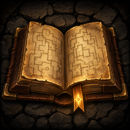
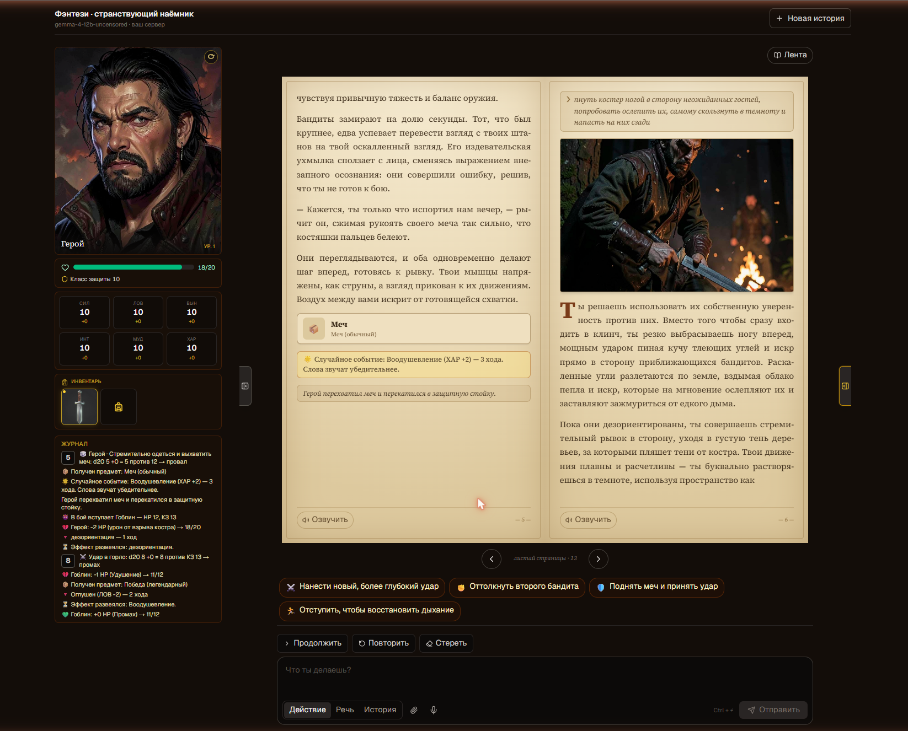
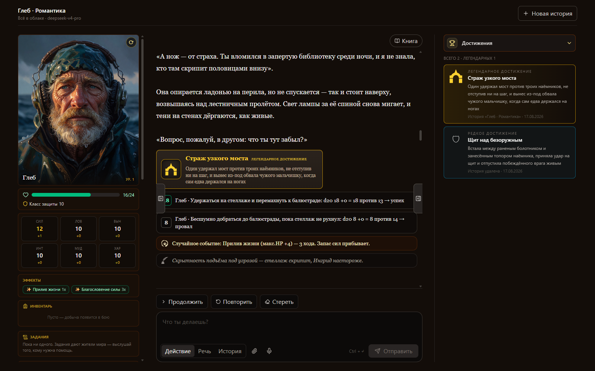
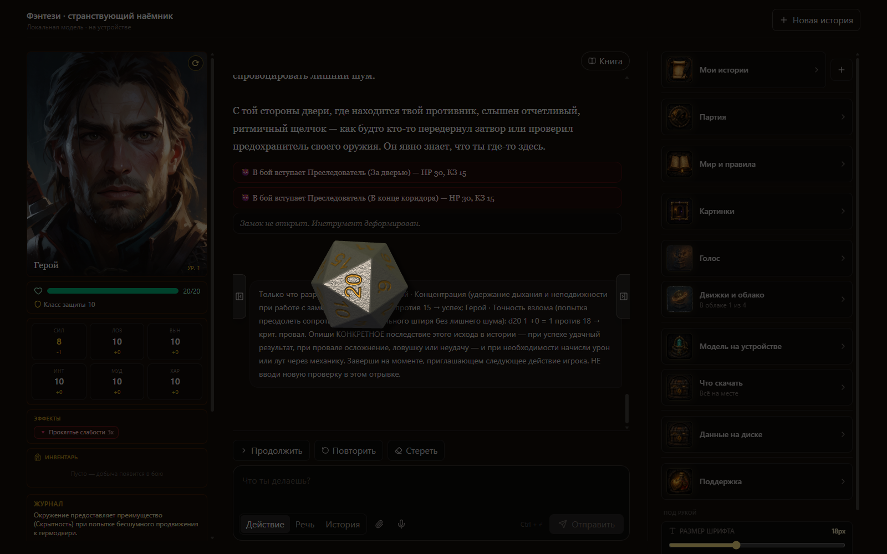
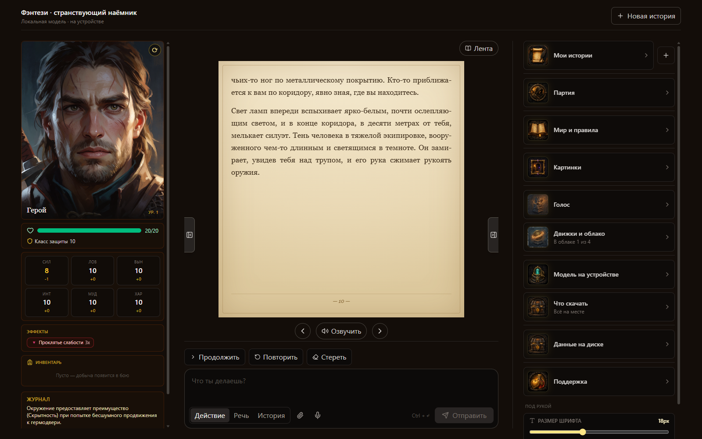
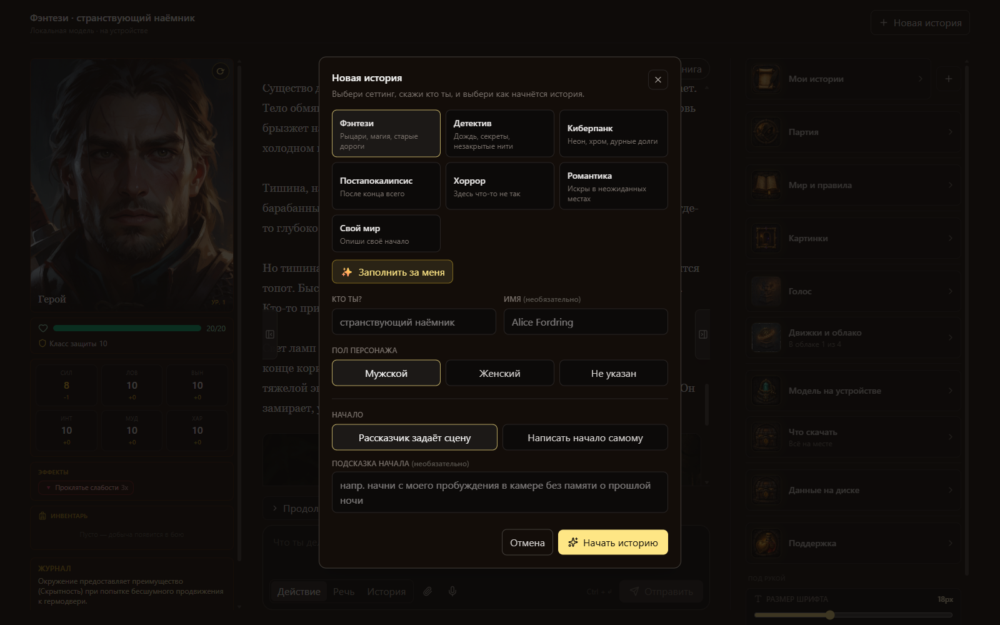
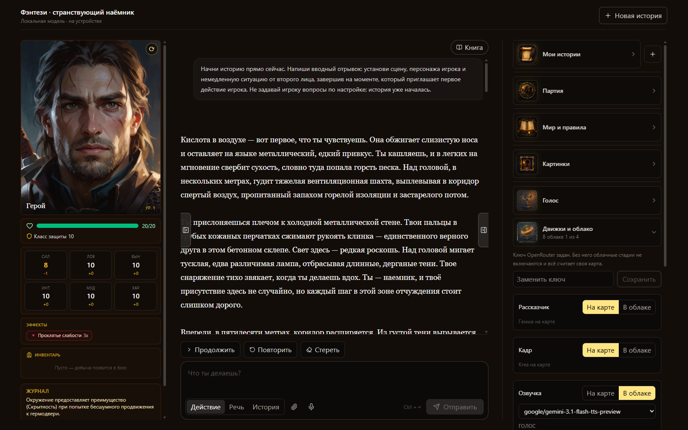
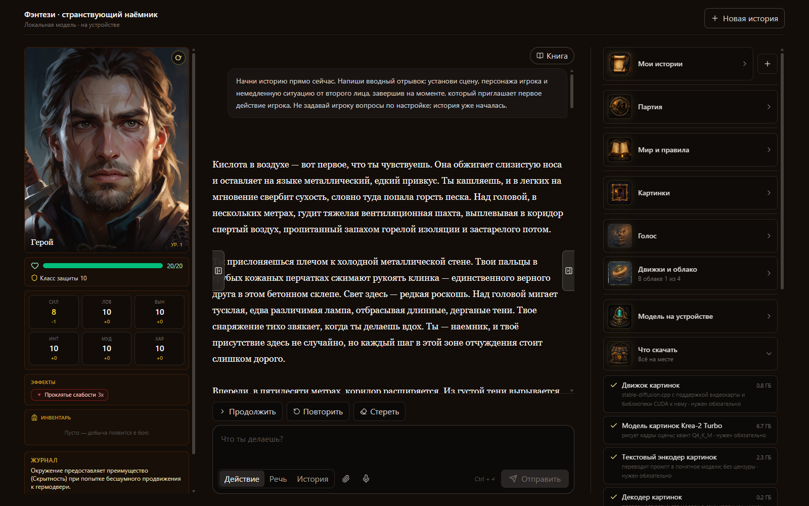
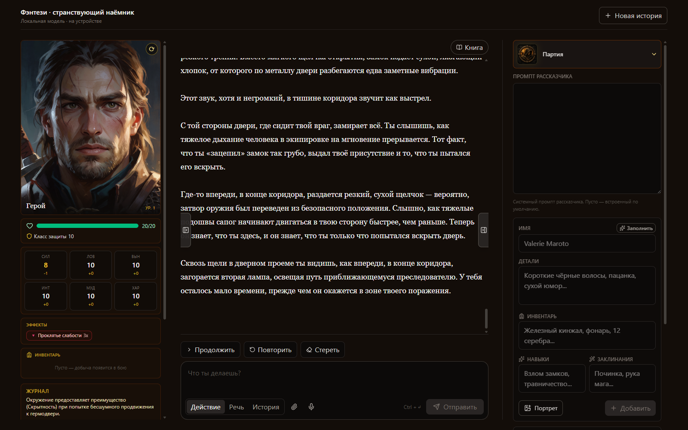
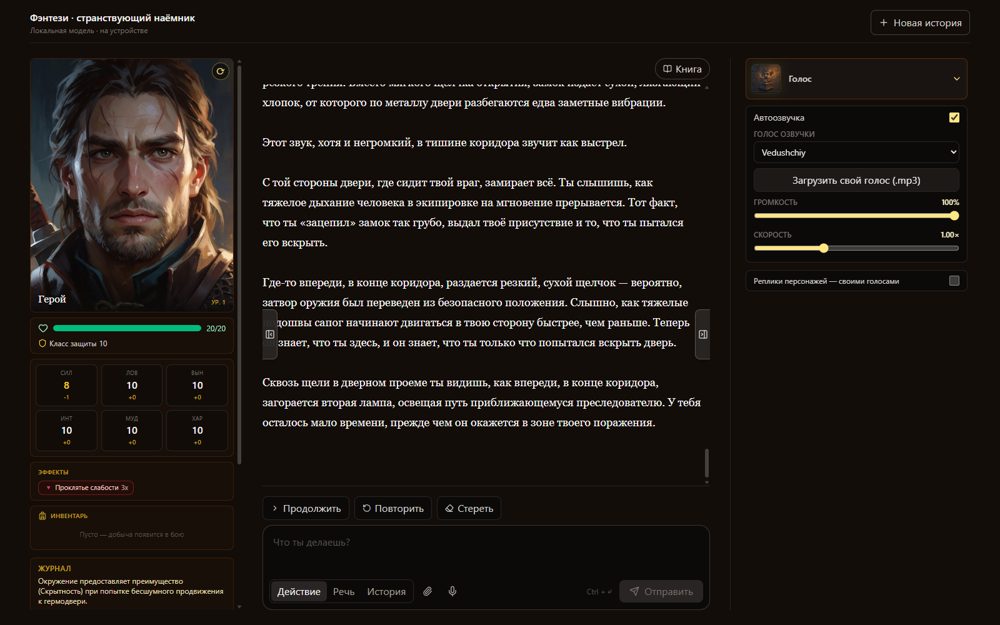

Dungeon UltimateReal 3D physics dice, honest D&D rules, uncensored art drawn on your own card, and a narrator that reads the scene aloud. No accounts, no filters, no cloud required — and if your PC is modest, any part of a turn can run through OpenRouter instead.
Windows 10/11 · one Rust binary · runs on a weak PC through the cloud

Everything a table needs — the story, the rules, the dice, the art and the voice — running on one machine.
A real physics d20 tumbles across the scene. The engine rolls first with a cryptographic generator, then the die is pinned to land on exactly that number — the AI cannot fudge a result.
Six ability scores, armour class, hit points, initiative, crits that double the dice, conditions, timed effects and loot with stat modifiers. A deterministic engine decides outcomes, not the narrator.
Scenes are drawn locally by Krea-2 Turbo with an abliterated text encoder. A location keeps its anchor frame, so the same room stays the same room across the whole adventure.
Sentences are voiced while the narrator is still writing, so audio starts in seconds. Character lines are spoken in that character's own voice. A voice pack ships with the game.
Press the mic and say what you do. Speech is transcribed on your machine — nothing is uploaded. Two engines to choose from: Parakeet or Whisper.
Narration, art, voice and speech input each switch to the cloud independently. Flip them all and a thin laptop runs the same game.
Read your adventure as paginated spreads with the illustrations in place — or have the whole spread read aloud.
The model does not guess the state of the game — it asks. Open quests, the character sheet, the inventory, the journal. It rolls a check and learns the outcome mid-sentence, closes a quest that was fulfilled, orders the frame. The model proposes, the engine decides.
A living person asks for help — taking the quest is your call. Achievements are the reward for a deed and live in your profile, not inside a story: delete the story and the award stays, remembering where it was earned.
Narration, action chips, suggestions, the adventure journal and the voice all follow your language: Russian, English, Spanish, French, German, Chinese, Japanese.
One card, several jobs — arbitrated so each gets the whole GPU when it needs it.
Real screens from a running game, not mockups.








Nothing is installed into the system. Everything — models, saves, generated frames — lives inside the app folder. Delete the folder and the game is gone.
The game downloads its own weights: about 17 GB for the required parts, 23 GB with narration and speech input. Interrupted downloads resume where they stopped.
One Rust binary. No Python, no Node at runtime, nothing in the registry.
| Part | What runs it |
|---|---|
| Story | Gemma 4 12B uncensored · llama.cpp |
| Art | Krea-2 Turbo Q4_K_M · stable-diffusion.cpp |
| Narration | Higgs Audio v3 · voice cloning |
| Speech input | Parakeet-TDT-0.6B-v3 · ONNX Runtime |
| Rules | Own deterministic D&D 5e engine, 240 tests |
| Cloud | OpenRouter, per stage, optional |
| Needs | Windows 10/11 · NVIDIA 12+ GB, or no GPU in cloud mode |